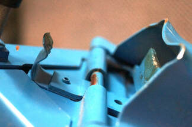

Workmate 79-001 Leg Clip Repair
The Workmate 79-001 Types 1, 2, 3, 4, 5, and 6, as well as most types of the UK model WM625, have a dual spring-steel clip at the hinge point of each leg, to hold the leg in either the extended or folded position so it doesn't just flop loosely. It's common for these clips to get bent and stop working properly. Somewhat less commonly, the metal clips can actually break. Used original clips come up for sale on eBay occasionally, but they are rare. For most owners that leaves three other options: - fix a bent clip
- find a similar clip that can be modified to work
- make a replacement clip from scratch
Fix a bent leg clipI'm going to describe three methods to use to fix a bent clip. (The following is based on suggestions from a couple of other owners, plus my experience fixing my own clips.) You can:- Bend the clip back into shape with pliers
- Hammer the clip back into shape
- Shorten the clip by grinding or filing it
IMPORTANT: Note that the repair below is specific to the inner clip, the one that holds the leg folded. This is the clip that is more often damaged. The shape of the outer clip is very different, so if you need to fix it, make sure you know its original shape and dimension before you start.
The first photo below is a damaged clip, seriously squashed from its original shape.
Second is an undamaged clip viewed from one side, showing the shape and size you're trying to restore to. It's basically a half circle with a diameter of just under 1 inch. You don't have to get the shape perfect, but it has to be pretty close.
The third shows an undamaged clip viewed from directly above. Notice that you can see a thin sliver of the Workmate frame just beyond the curve of the clip and that the open end of the clip covers about half of the view of the rivet below. Again, this doesn't have to be perfect to work, but it's the target shape you want to aim for.
Bending the clip with pliers
The natural instinct for most of us is to try to rebend the clip with pliers, but it's very difficult to fix it this way. The spring steel cannot be shaped into a sufficiently smooth curve with pliers.
Nevertheless, I recommend that you start by using pliers to get it close to where it should be before trying the next two steps. This is because it's much easier to hammer the clip back into shape if you first bend it enough that it comes close to the target diameter. If it's too squashed, you'll have trouble getting the dowel or bar inside it to do the hammering.
Vice-grips worked well for the bending for me. It could help in some cases to use two sets of pliers.
Hammering the clip
To hammer the clip, the owner who suggested this method to me used a section of .933" diameter round bar stock as a mandrel. I only had wooden dowels and found that 15/16" (.9375") worked well. I believe one inch would be too large, but a little smaller, perhaps 7/8", would probably work.
The other owner removed the clip from the Workmate by drilling out the rivet, in order to work on it more easily. He later said that he didn't think that was necessary, so I left mine on the Workmate. This has the advantage of allowing you to test the operation of the leg as you work on the clip, to be sure when you have the shape of the clip right.
The photos below show a clip being worked on using a 15/16" dowel for the mandrel. The first photo shows it before it has reached the desired shape, while the second one shows it in the finished state.
I can't give any specific guidance on how to do the hammering except to say that you put the dowel through the clip and beat on the clip repeatedly, checking the shape by folding and unfolding the leg, measuring, comparing it with a good clip, etc. (It helps if you have at least one working clip!)
If all goes well, you will be able to get the clip shaped and working properly by hammering. If so, you're done.
Shortening the clip by grinding or filing
However, on one of my clips after quite a bit of hammering I still didn't quite have it. The clip was just enough out of shape that the end of the clip would hit the inside of the leg just before the leg reached the fully folded position.
Taking a cue from another owner who had told me about fixing his clip by shortening it, I got out my Dremel tool with a grinding wheel and took 1/16" or less off the end of the clip. I followed that with a hand file to deburr it. That was enough to complete the fix.

Find a Similar Clip That Can Be Modified
A workmate owner in the UK sent me photos of using a commercial tool-hanger clip to replace a missing leg clip on a Workmate WM625. The photo on the left shows the shape and position of an undamaged clip.
The first photo below shows the tool-hanger clip, designed to hold a tool such as a broom or shovel with a round handle. The two green lines show approximately where the usable portion was cut from. The second photo shows the part of the clip that was cut off, filed on the ends, and bolted in place on the Workmate. You can just see a washer that was needed underneath the free end of the clip to raise it to the right height. At that point, folding the leg caused the top end of the outer surface of the leg to hit the free end of the clip The third photo shows where a notch had to be cut out of the top end of the outer surface of the Workmate leg so that it would clear the free end of the replacement clip.
Make a Replacement Clip
Another way to do this repair is to make a replacement clip. A workmate owner gave me a brief description of how he made a replacement for one of his clips that had broken. (To be continued)
Avoiding future damage
Once you have the clip fixed, you'll want to keep it that way. The best thing you can do for the clips is to keep their outer surfaces slippery, so the metal edge of the leg can slide over it smoothly. To do this I use a lubricant called SLIPIT Sliding Compound, available from Lee Valley Tools and other woodworking supply stores. I have heard from other Workmate owners who like Door Ease Stick Lubricant, available at Ace Hardware and others.
If you have experience repairing a damaged clip and have success or lack of success to report, let me know through the Contact page.